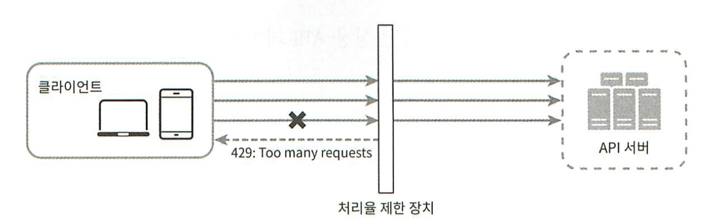
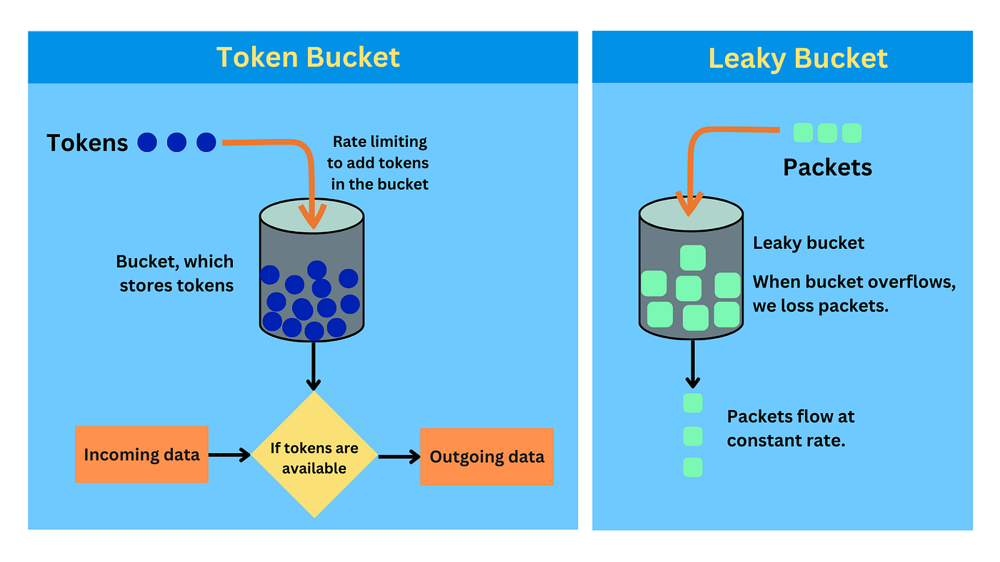
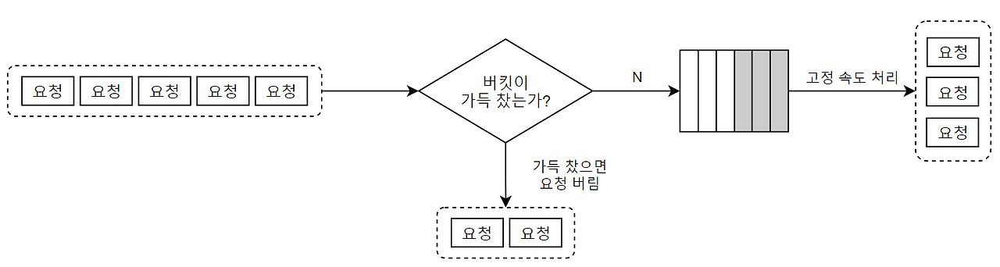
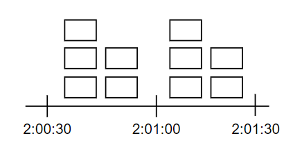
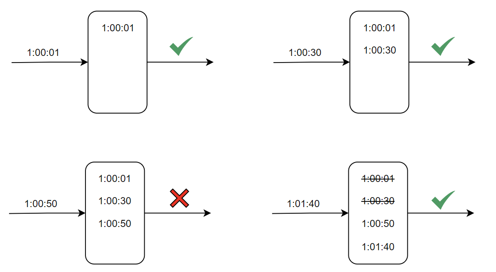

대규모 시스템을 설계할 때 처리율 제한(Rate Limiting) 은 선택이 아니라 필수에 가깝다.
단순히 “요청을 막는다” 수준의 기능이 아니라, 시스템 안정성, 보안, 비용 절감과 직결되는 핵심 설계 요소이기 때문이다.
이 글에서는 처리율 제한을
-
왜 사용하는지
-
어디에 구현하는지
-
어떤 알고리즘들이 있고 각각의 특성이 무엇인지
를 중심으로 정리한다.
처리율 제한이란?
처리율 제한은 클라이언트 또는 서비스가 보내는 트래픽의 처리 속도(rate)를 제어하는 기법이다.
예를 들면 다음과 같은 정책들이 있다.
-
초당 2회 이상 새 글 업로드 금지
-
동일 IP에서 하루 10개 이상 계정 생성 금지
-
동일 디바이스에서 주당 5회 이상 리워드 요청 금지
이러한 제한은 악의적인 공격뿐 아니라,
정상 사용자로 인한 트래픽 폭증에서도 시스템을 보호하는 역할을 한다.
처리율 제한의 장점
1. DoS / DDoS 공격 방지
무차별 요청으로 인한 CPU, 메모리, DB 커넥션 등의 자원 고갈을 방지할 수 있다.
처리율 제한은 공격 트래픽을 애플리케이션 로직에 도달하기 전에 차단하는 1차 방어선 역할을 한다.
2. 비용 절감
불필요한 요청을 조기에 차단함으로써
-
DB 접근
-
외부 API 호출
-
네트워크 트래픽
을 줄일 수 있고, 이는 곧 운영 비용 절감으로 이어진다.
3. 서버 과부하 방지
순간적인 트래픽 스파이크가 발생해도 시스템이 감당 가능한 수준으로 요청을 제한하여
예측 가능한 성능과 안정적인 응답 시간을 유지할 수 있다.
처리율 제한 장치는 어디에 둘 것인가?
실무에서는 처리율 제한을 보통 API Gateway 계층에 구현한다.
API Gateway에 두는 이유
-
모든 요청이 반드시 통과하는 단일 진입 지점
-
애플리케이션 서버보다 앞단에서 차단 가능
-
서비스 로직과 관심사 분리
API Gateway는 처리율 제한 외에도 다음 기능을 함께 제공하는 경우가 많다.
-
SSL 종료(termination)
-
인증/인가
-
IP 허용 목록 관리
-
로깅 및 모니터링
이 때문에 직접 구현하기보다는 위탁 관리형(Managed) 서비스를 사용하는 경우가 많다.
위탁 관리형 서비스 예시
-
AWS API Gateway (Throttle, Usage Plan)
-
AWS WAF Rate-based Rule
-
Google Cloud API Gateway
-
Cloudflare Rate Limiting
-
Kong, Apigee 등 API Gateway 솔루션
운영 부담을 줄이고, 고가용성과 확장성을 확보할 수 있다는 점이 가장 큰 장점이다.

처리율 제한 알고리즘
처리율 제한 알고리즘의 기본 아이디어는 단순하다.
“특정 대상(IP, 사용자, 토큰 등)에 대해
일정 시간 동안 허용된 요청 수를 초과하면 요청을 거부한다.”
이를 구현하는 방식에 따라 여러 알고리즘이 존재한다.
1. 토큰 버킷(Token Bucket) 알고리즘
동작 방식
-
버킷에 토큰이 주기적으로 채워진다.
-
요청 1건당 토큰 1개를 소비한다.
-
토큰이 없으면 요청은 거부된다.
주요 파라미터
-
버킷 크기 (capacity)
-
토큰 공급률 (refill rate)
일반적으로 API 엔드포인트 또는 사용자 단위로 버킷을 구성한다.
장점
-
구현이 비교적 단순
-
메모리 효율이 좋음
-
짧은 시간에 몰리는 트래픽(Burst)을 허용할 수 있음
왜 메모리 효율이 좋은가?
토큰 버킷은 요청의 히스토리를 저장하지 않는다.
필요한 정보는 다음 두 가지뿐이다.
-
현재 토큰 개수
-
마지막 토큰 보충 시각
즉, 요청 수에 비례해 메모리를 사용하지 않고 상수 크기의 상태만 유지한다.
단점
-
버킷 크기와 토큰 공급률 튜닝이 까다로움
-
설정에 따라 과도한 burst 허용 또는 정상 트래픽 차단 가능

2. 누출 버킷(Leaky Bucket) 알고리즘
동작 방식
-
요청을 큐에 저장
-
고정된 속도로 요청을 처리
-
큐가 가득 차면 요청 거부
특징
누출 버킷은 항상 일정한 처리율을 유지한다.
따라서 출력이 안정적이어야 하는 환경에 적합하다.
토큰 버킷과의 차이
-
누출 버킷: 처리율이 고정
-
토큰 버킷: 토큰이 쌓여 있다면 한 번에 여러 요청 처리 가능
즉, 토큰 버킷은 0개부터 버킷 크기만큼까지 요청을 처리할 수 있어
처리율이 고정되지 않는다.
단점
-
burst 트래픽 흡수 불가
-
실시간 API에는 부적합한 경우 많음
-
큐 관리 비용 발생

3. 고정 윈도 카운터(Fixed Window Counter)
동작 방식
-
고정된 시간 윈도(예: 1분)마다 요청 수를 카운트
-
윈도가 끝나면 카운터 초기화
문제점
윈도 경계 문제가 발생할 수 있다.
예를 들어, 윈도 종료 직전과 직후에 요청이 몰리면
의도한 처리율보다 더 많은 요청이 허용될 수 있다.

4. 이동 윈도 로깅(Sliding Window Log)
동작 방식
-
각 요청의 타임스탬프를 기록
-
최근 N초 동안의 요청 개수를 계산
-
Redis Sorted Set 같은 자료구조 활용
장점
-
가장 정확한 처리율 제한
-
윈도 경계 문제 없음
단점
- 요청 수만큼 로그를 저장해야 하므로 메모리 사용량 큼

5. 이동 윈도 카운터(Sliding Window Counter)
개념
-
고정 윈도 카운터와 이동 윈도 로깅의 절충안
-
이전 윈도의 일부 요청을 가중치로 반영해 현재 윈도 상태 계산
장점
-
윈도 경계 문제 완화
-
로그 저장 없이도 비교적 정확
-
메모리 효율적
단점
-
요청이 시간 내에 균등하게 분포되었다는 가정
-
엄밀한 정확성은 다소 떨어짐
개략적인 아키텍처
처리율 제한 시스템의 기본 구조는 다음과 같다.
-
제한 대상(IP, 사용자, 토큰 등) 결정
-
대상별 카운터 또는 상태 저장
-
임계값 초과 여부 판단
-
초과 시 HTTP 429(Too Many Requests) 응답
분산 환경에서는 Redis 같은 인메모리 저장소가
사실상의 표준 구성 요소로 사용된다.
정리
처리율 제한은 단순한 보호 장치가 아니라
대규모 시스템을 안정적으로 운영하기 위한 핵심 설계 요소다.
중요한 것은 “어떤 알고리즘이 최고인가”가 아니라,
-
어떤 트래픽 특성을 가지는가
-
정확성이 중요한가, 안정성이 중요한가
-
비용과 운영 부담은 어느 정도 감수할 수 있는가
에 따라 적절한 알고리즘을 선택하는 것이다.
이러한 트레이드오프를 설명할 수 있다면
시스템 설계 면접에서도 충분히 설득력 있는 답변이 된다.
궁금했던 포인트 정리
Q1. 토큰 버킷 알고리즘은 왜 메모리 효율이 좋은가?
토큰 버킷 알고리즘은 요청 히스토리를 저장하지 않는다는 점이 핵심이다.
필요한 상태 정보는 다음 두 가지뿐이다.
-
현재 버킷에 남아 있는 토큰 수
-
마지막으로 토큰을 보충한 시각
즉, 요청이 10건이든 10만 건이든
요청 수에 비례해 메모리를 추가로 사용하지 않는다(O(1)).
반면 이동 윈도 로깅 알고리즘은:
-
각 요청의 타임스탬프를 저장해야 하므로
-
트래픽이 많을수록 메모리 사용량이 증가한다
이 차이 때문에 토큰 버킷은
고트래픽 환경에서도 메모리 예측이 쉬운 알고리즘으로 평가된다.
Q2. 토큰 버킷 알고리즘의 요청 처리율은 왜 고정이 아닌가?
토큰 버킷은 토큰이 쌓일 수 있기 때문이다.
-
토큰은 설정된 속도로 지속적으로 보충된다
-
요청이 없으면 토큰은 버킷에 누적된다
-
이후 요청이 몰리면 누적된 토큰만큼 한 번에 여러 요청을 처리할 수 있다
즉, 어떤 순간에는:
-
초당 0건 처리될 수도 있고
-
초당 N건(버킷 크기)까지 처리될 수도 있다
이 때문에 토큰 버킷의 처리율은 순간적으로 가변적이며,
짧은 burst 트래픽을 허용할 수 있다.
반대로 누출 버킷은:
-
큐에 요청을 쌓고
-
항상 일정한 속도로만 요청을 처리하기 때문에
처리율이 고정된다.
Q3. 토큰 버킷과 누출 버킷의 핵심 차이는 무엇인가?
두 알고리즘의 차이는 “입력 안정성 vs 출력 안정성” 으로 요약할 수 있다.
| 구분 | 토큰 버킷 | 누출 버킷 |
|---|---|---|
| 처리율 | 가변적 | 고정 |
| Burst 허용 | 가능 | 불가능 |
| 출력 안정성 | 낮음 | 높음 |
| 적합한 환경 | API, 사용자 요청 | 스트리밍, 백엔드 파이프라인 |
즉,
-
사용자 경험이 중요한 API → 토큰 버킷
-
처리 속도가 일정해야 하는 시스템 → 누출 버킷
으로 선택되는 경우가 많다.
Q5. 이동 윈도 로깅은 누출 버킷의 단점을 극복한 것인가?
완전히 극복했다고 보기는 어렵다.
두 알고리즘은 해결하려는 문제가 다르기 때문이다.
-
누출 버킷
→ 출력 처리율을 일정하게 유지하는 것이 목적 -
이동 윈도 로깅
→ 시간 단위 기준으로 요청 수를 정확히 제한하는 것이 목적
즉,
-
누출 버킷은 시스템 내부 안정성에 초점이 있고
-
이동 윈도 로깅은 정책의 정확성에 초점이 있다
Q6. 이동 윈도 카운터는 왜 ‘느슨한’ 알고리즘이라고 불릴까?
이동 윈도 카운터는
이전 윈도에 들어온 요청이 균등하게 분포되어 있었다는 가정을 기반으로 계산한다.
하지만 실제 트래픽은:
-
특정 시점에 몰리는 경우가 많고
-
항상 균등하지 않다
이 때문에:
-
계산 결과는 근사치(추정치)가 되며
-
엄밀한 정확성은 보장하지 않는다
대신:
-
메모리 효율
-
구현 난이도
-
성능
사이에서 현실적인 타협점을 제공한다.